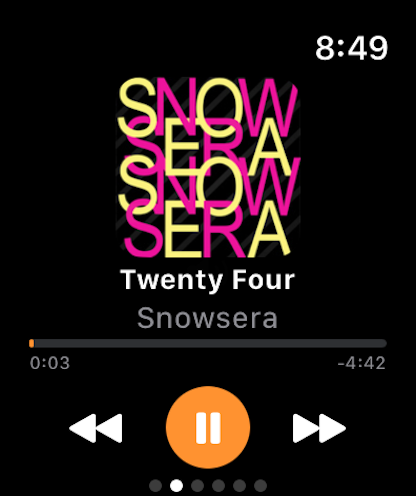
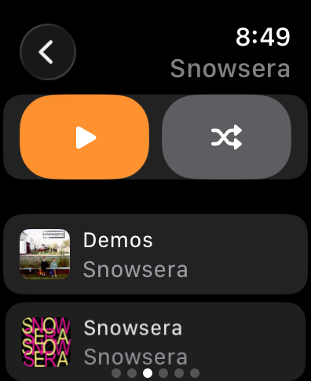
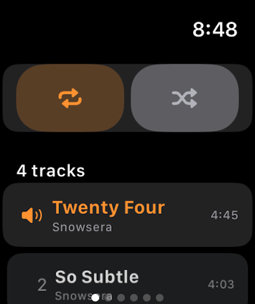
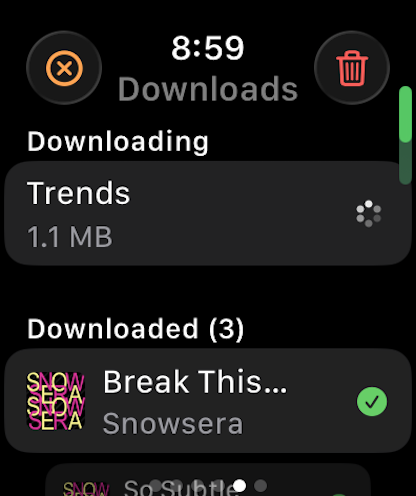
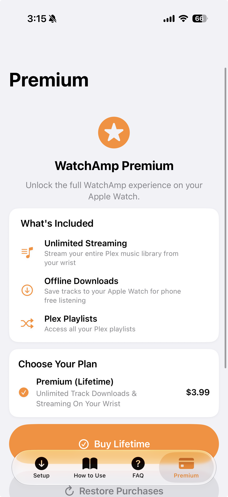
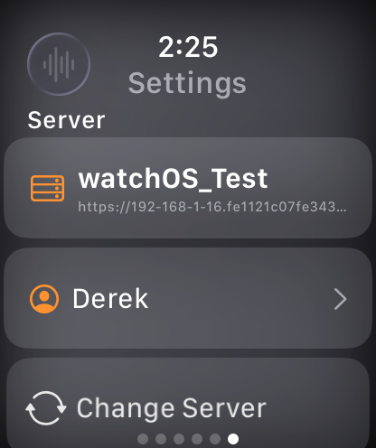
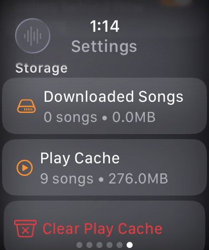
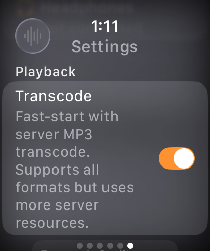

Direct watch playback
Start music from the wrist over Wi-Fi or cellular with a player designed around Apple Watch controls.
Standalone Plex music for Apple Watch
Browse your Plex music library, stream directly from Apple Watch, and keep albums ready offline when the phone stays behind.
WatchAmp 2.0 Now Available on the App Store!


Start music from the wrist over Wi-Fi or cellular with a player designed around Apple Watch controls.
Cache tracks locally for workouts, travel, and places where streaming from Plex is unreliable.
Sign in through Plex, choose your server, and browse artists, albums, playlists, search, and queue.
Built for the wrist
WatchAmp keeps the interface focused on quick listening: large playback controls, readable lists, queue management, and settings for server, cache, and transcoding behavior.


Screenshots




Download
Install WatchAmp for Plex on iPhone and Apple Watch, then sign in with Plex to start streaming or downloading music from your own server.
Support
Use GitHub to file reproducible bugs, playback failures, server connection problems, and setup issues. Include your watchOS version, Plex server version, and the steps that triggered the problem.